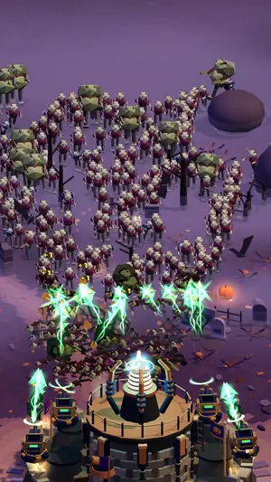
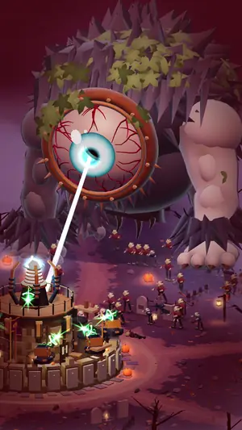
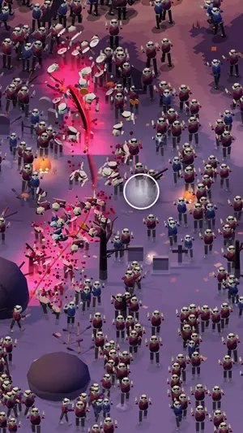
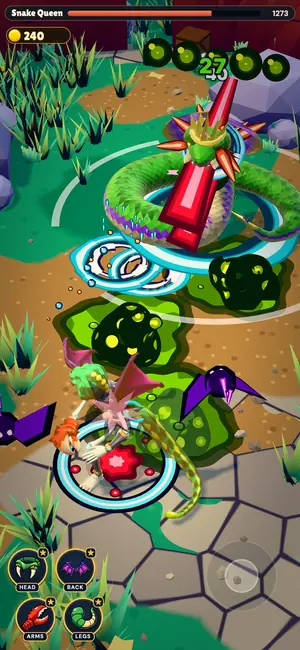
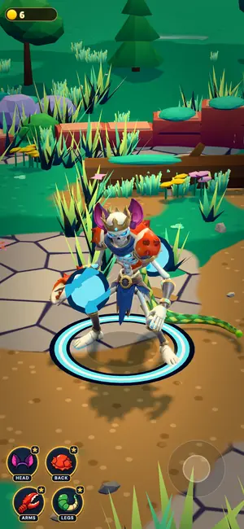
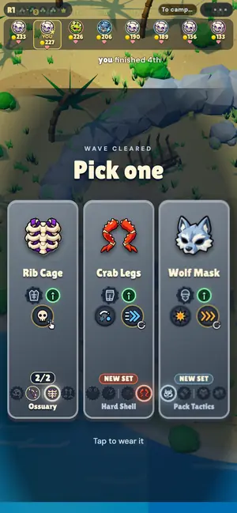
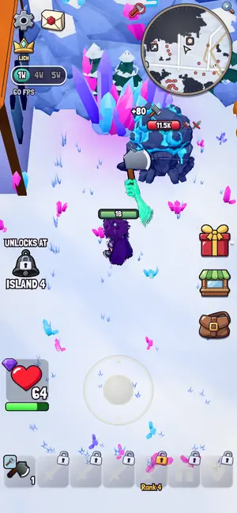
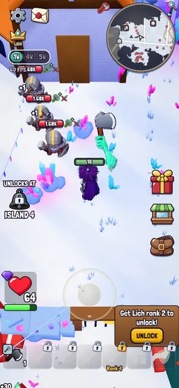
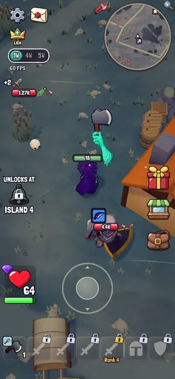

Wiserax · games · made with AI agents
I make games with AI agents. Pick a level.
Every game here was built by me and my agents with Wisecraft. Some were prototypes that never got a green light, so they respawn here, still playable. All of them run in a phone browser: no install, no login.
Level 01 · Tower defense Playable
Zombie Tower
Tap zombies. Build your fortress. Return stronger.
Guard one tower while thousands of zombies pour in: tap to strike, hold to charge a big hit, buy upgrades and beat a boss at the end of every stage. Short runs, right in your phone browser.



Level 02 · Multiplayer auto-battler Playable
GRAFT
Kill the beast. Wear its body.
Every beast you kill drops a body part (head, back, arms or legs) that you graft onto your hero, until you are a crab-snake-wolf hybrid with its own playstyle. Last one standing wins: solo against 7 bots, or with up to 12 friends.



Level 03 · Hack and slash New today
NECRO
Raise the dead, take their souls.
Steer a necromancer with a joystick while her ghost hands swing up to five weapons on their own. Every enemy makes you stronger, until you can break the gate guard and open the next island.



How these get made
One human, a lot of agents
I direct, play and judge; agents write the code, draw the boards, run the bots and break my builds. Wisecraft is the studio kit that keeps them in line, and it's open source.
Wisecraft